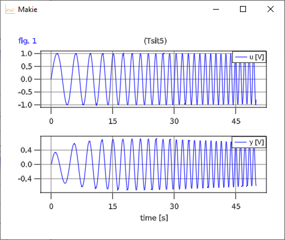
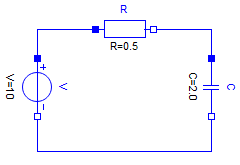
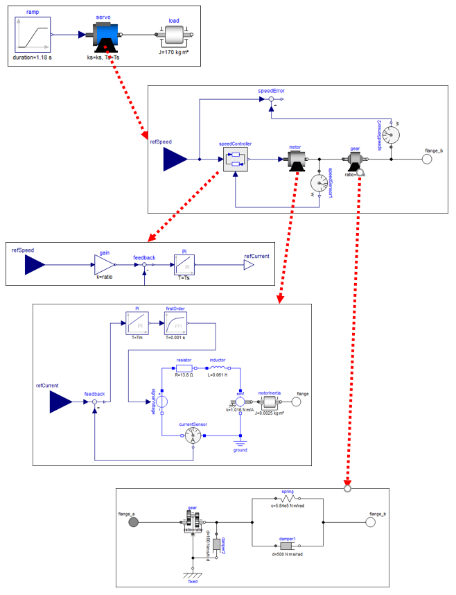

2 Modeling
2.1 Equation oriented models
A low pass filter block with input u and output y
\[\begin{aligned} T \cdot \frac{dx}{dt} + x &= u\\ y &= x \\ x(t_0) &= 0 \end{aligned}\]
can be defined as:
using Modia
LowPassFilter = Model(
T = 0.2,
u = input,
y = output | Var(:x),
x = Var(init=0),
equation = :[T * der(x) + x = u],
)The symbols input and output refer to predefined variable constructors to define the input and output variables. If an equation has just a unique variable in the left hand side, y, the right hand side can be given as a quoted expression in a Var-constructor Var(:x) after the output constructor combined with the merge operator, |, see below.
2.2 Merging models
It is possible to combine models by merging. If we want to change the model to become a highpass filter, an alternative output equation
\[y = -x + u\]
is defined in an anonymous model Model( y = :(-x + u) ). This anonymous model is merged with LowPassFilter using the merge operator |:
HighPassFilter = LowPassFilter | Model( y = Var(:(-x + u) ) )The merging implies that the output property of y is kept, but the binding expression is changed from :x to :(-x + u).
In general, recursive merging is desired and Modia provides a mergeModels function for that (see appendix A.3 MergeModels algorithm). This function is invoked as a binary operator | (also used for merge in Python). Note, that the order of the arguments/operands are important.
Generalizing the block to have two outputs for both low and high pass filtering would be done as follows:
LowAndHighPassFilter = LowPassFilter | Model(
y = nothing,
low = output | Var(:x),
high = output | Var(:(-x + u)),
)The equation for y is removed by "assigning" nothing and two variables are defined and declared as outputs.
Model LowAndHighPassFilter represents the following equations:
\[\begin{aligned} T \cdot \frac{dx}{dt} + x &= u\\ low &= x \\ high &= -x + u \\ x(t_0) &= 0 \end{aligned}\]
By turning on logging of merging setLogMerge(true), the translator gives the log:
Adding: value = :(x)
Adding: value = :(-x + u)
Deleting: y
Adding: low = Var(
output = true,
value = :(x),
),
Adding: high = Var(
output = true,
value = :(-x + u),
),The resulting model is pretty printed by calling @showModel LowAndHighPassFilter:
LowAndHighPassFilter = Model(
T = 0.2,
u = Var(
input = true,
),
x = Var(
init = 0.0 V,
),
equations = :([T * der(x) + x = u]),
low = Var(
output = true,
value = :(x),
),
high = Var(
output = true,
value = :(-x + u),
),
),2.3 Functions and tables
In order to test an input/output block as defined in the previous section, an input needs to be defined. This can be made by adding an equation for u. Assume we want u to be sinousoidial with an increasing frequency:
TestLowAndHighPassFilter = LowAndHighPassFilter | Model(
u = :(sin( (time+1u"s")*u"1/s/s" * time)*u"V"),
x = Var(init=0.2u"V")
)time is a reserved name for the independent variable. It has unit s for seconds. The Julia package Unitful provides a means for defining units and managing unit inference. It need not be explicitly defined, because its symbols are exported by using Modia. Definition of units is done with a string macro u"...". In this case, the input signal was given unit Volt. The state x must then also have consistent unit, that is Volt. If the model equations contain systems of simultaneous equations, then approximate guess values, optionally with units, must be given start: i = Var(start=0.0u"A").
The input signal can also be defined by interpolation in a table:
using Interpolations
table = CubicSplineInterpolation(0:0.5:2.0, [0.0, 0.7, 2.0, 1.8, 1.2])
TestLowAndHighPassFilter2 = TestLowAndHighPassFilter | Map(u = :(table(time*u"1/s")*u"V"))A function cannot return more as one variable and a function cannot modify one of its arguments:
equations = :[
(y1, y1) = fc1(u1,u2) # Error: Two return arguments
fc2!(u,y) # Error: Not known that fc2! computes y
println("This is a test") # Fine
]The first issue can be fixed by rewriting the function call:
equations = :[
v = fc1(u1,u2)
y1 = v[1]
y2 = v[2]
]2.4 Hierarchical modeling
Sofar, the composition of models have resulted in named tuples with values being numeric values or quoted expressions. Hierarchical models are obtained if the values themself are named tuples. A model with two filters can, for example, be defined as follows:
TwoFilters = (
high = HighPassFilter,
low = LowPassFilter,
)Note, that the previous definitions of HighPassFilter and LowPassFilter was used instead of making the defintions inline.
A band pass filter is a series connection of a high pass filter and a low pass filter and can be described as:
BandPassFilter = (
u = input,
y = output,
high = HighPassFilter | Map(T=0.5, x=Var(init=0.1u"V")),
low = LowPassFilter | Map(x=Var(init=0.2u"V")),
equations = :[
high.u = u,
low.u = high.y,
y = low.y]
)A new input has been defined which is propagated to high.u. The series connection itself is obtained by the equation low.u = high.y. Note, that dot-notation is allowed in equations.
The input and output for the BandPassFilter when using the same input definition as for the TestLowPassFilter
TestBandPassFilter = BandPassFilter | Map(
u = :(sin( (time+1u"s")*u"1/s/s" * time)*u"V")
)
bandPassFilter = @instantiateModel(TestBandPassFilter)
simulate!(bandPassFilter, Tsit5(), stopTime = 50u"s")
plot(bandPassFilter, ["u", "y"], figure=2)is shown below:

2.5 Physically oriented modeling
Sofar, only signal flow modeling has been used, i.e. input/output blocks coupled with equations between outputs and inputs. For object oriented modeling more high level constructs are neccessary. Coupling is then acausal and involves potentials such as electric potential, positions, pressure, etc. and flows such as electric current, forces and torques and mass flow rate.
2.5.1 Connectors
Models which contain any flow variable, i.e. a variable having an attribute flow=true, are considered connectors. Connectors must have equal number of flow and potential variables, i.e. variables having an attribute potential=true, and have matching array sizes. Connectors may not have any equations. An example of an electrical connector with potential (in Volt) and current (in Ampere) is shown below.
Pin = Model( v = potential, i = flow )potential is a shortcut for Var(potential=true) and similarly for flow.
2.5.2 Components
Components are declared in a similar ways as blocks. However, the interfaces between components are defined using connector instances.
An electrical resistor can be descibed as follows:
Resistor = Model(
R = 1.0u"Ω",
p = Pin,
n = Pin,
equations = :[
0 = p.i + n.i
v = p.v - n.v
i = p.i
R*i = v ]
)2.5.3 Inheritance
Various physical components sometimes share common properties. One mechanism to handle this is to use inheritance. In Modia, merging is used.
Electrical components such as resistors, capacitors and inductors are categorized as oneports which have two pins. Common properties are: constraint on currents at the pins and definitions of voltage over the component and current through the component.
OnePort = Model(
p = Pin,
n = Pin,
partialEquations = :[
0 = p.i + n.i
v = p.v - n.v
i = p.i ] )Having such a OnePort definition makes it convenient to define electrical component models by merging OnePort with specific parameter definitions with default values and equations:
Resistor = OnePort | Model( R = 1.0u"Ω", equation = :[ R*i = v ], )
Capacitor = OnePort | Model( C = 1.0u"F", v=Map(init=0.0u"V"), equation = :[ C*der(v) = i ] )
Inductor = OnePort | Model( L = 1.0u"H", i=Map(init=0.0u"A"), equation = :[ L*der(i) = v ] )
ConstantVoltage = OnePort | Model( V = 1.0u"V", equation = :[ v = V ] )The merged Resistor is shown below:
Resistor = Model(
p = Model(
v = Var(
potential = true,
),
i = Var(
flow = true,
),
),
n = Model(
v = Var(
potential = true,
),
i = Var(
flow = true,
),
),
partialEquations = :([v = p.v - n.v; 0 = p.i + n.i; i = p.i]),
R = 1.0 Ω,
equations = :([R * i = v]),
),2.5.4 Connections
Connections are described as an array of tuples listing the connectors that are connected:
( <connect reference 1>, <connect reference 2>, ... )A connect reference has either the form 'connect instance name' or 'component instance name'.'connect instance name' with 'connect instance name' being either a connector instance, input or output variable.
Examples
connect = :[
(V.p, R1.p)
(R1.n, p)
(C1.n, V.n, R2.p)
...
]For connectors, all the potentials of the connectors in the same connect tuple are set equal and the sum of all incoming flows to the model are set equal to the sum of the flows into sub-components.
2.5.5 Connected models
Having the above electrical component models, enables defining a filter

by instanciating components, setting parameters and defining connections.
Filter = (
R = Resistor | Map(R=0.5u"Ω"),
C = Capacitor | Map(C=2.0u"F"),
V = ConstantVoltage | Map(V=10.0u"V"),
connect = :[
(V.p, R.p)
(R.n, C.p)
(C.n, V.n)
]
)The connect tuples are translated to:
V.p.v = R.p.v
0 = V.p.i + R.p.i
R.n.v = C.p.v
0 = R.n.i + C.p.i
C.n.v = V.n.v
0 = C.n.i + V.n.i2.5.6 Parameter propagation
Hierarchical modification of parameters is powerful but sometimes a bit inconvenient. It is also possible to propagate parameters intoduced on a high level down in the hierarchy. The following Filter model defines three parameters, r, c and v. The r parameter is used to set the resistance of the resistor R: Map(R=:r).
Filter2 = Model(
r = 2.0u"Ω",
c = 1.0u"F",
v = 10u"V",
R = Resistor | Map(R=:r),
C = Capacitor | Map(C=:c),
V = ConstantVoltage | Map(V=:v),
connect = :[
(V.p, R.p)
(R.n, C.p)
(C.n, V.n)
]
)Two separate filters can then be defined with:
TwoFilters = Model( f1 = Filter | Map( r = 10.0, c = 2.0), f2 = Filter )2.5.7 Redeclarations
It is possible to reuse a particular model topology by redeclaring the model of particular components. For example, changing the filter f1 to a voltage divider by changing C from a Capacitor to a Resistor. A predefined model Redeclare is used for this purpose.
VoltageDividerAndFilter = TwoFilters | Map(f1 = Map(C = Redeclare | Resistor | Map(R = 20.0)))By using Redeclare, a new model based on a Resistor is used for C and the usual merge semantics with the previously defined model of C is not used.
The above examples are available in file FilterCircuit.jl.
2.5.8 Drive train example
A larger example that utilizes most of the previously described features of Modia is available as $(Modia.path)/examples/ServoSystem.jl. This is a textual (Modia) representation of a Modelica model

and demonstrates how to build up a hierarchical, multi-domain model consisting of a servo-system with a load, where the servo-system consists of an electric motor with a current and speed controller, as well with a more detailed model of a gearbox.
2.6 Arrays
Model parameters and variables can be arrays. For example a linear state space system with $\boldsymbol{x}(t) \in \R^{n_x}, \boldsymbol{u}(t) \in \R^{n_u}, \boldsymbol{y}(t) \in \R^{n_y}, \boldsymbol{A} \in \R^{n_x \times n_x}, \boldsymbol{B} \in \R^{n_x \times n_u}, \boldsymbol{C} \in \R^{n_y \times n_x}, \boldsymbol{D} \in \R^{n_y \times n_u}$
\[\begin{aligned} \frac{d\boldsymbol{x}}{dt} &= \boldsymbol{A} \cdot \boldsymbol{x} + \boldsymbol{B} \cdot \boldsymbol{u}\\ \boldsymbol{y} &= \boldsymbol{C} \cdot \boldsymbol{x} + \boldsymbol{D} \cdot \boldsymbol{u} \end{aligned}\]
can be defined as:
StateSpace = Model(
A = fill(0.0,0,0),
B = fill(0.0,0,0),
C = fill(0.0,0,0),
D = fill(0.0,0,0),
u = input,
y = output,
x = Var(init = zeros(0)),
equations = :[
der(x) = A*x + B*u
y = C*x + D*u
]
)and used as:
col(args...) = hvcat(1, args...) # Construct a column matrix from a vector
SecondOrder = Model(
w = 20.0,
D = 0.1,
k = 2.0,
sys = StateSpace | Map(A = :([ 0 1;
-w^2 -2*D*w]),
B = :(col([0; w^2])),
C = :([k 0]),
D = :(zeros(1,1)),
x = Var(init = zeros(2)) ),
equations = :[sys.u = [1.0]]
)Variables sys.u and sys.y are vectors with one element each.
Note, [0; w^2] is a vector in Julia and not a column matrix (see the discussion here). In order that B is defined as column matrix, the function col(..) is used.
Array equations remain array equations during symbolic transformation and in the generated code, so the code is both compact and efficient. In order that this is reasonably possible, the definition of an array cannot be split in different statements:
equations = :[ # error, vector v is not defined as one symbol
m1*der(v[1]) = 2.0
m2*der(v[2]) = 3.0
]If scalar equations are needed in which arrays are used, then the arrays have to be first defined and then elements can be used.
v = Var(init=zeros(2)),
equations = :[
a = der(v)
a1 = a[1]
a2 = a[2]
m1*a1 = 2.0
m2*a2 = 3.0
]2.7 Model libraries
Modia provides a small set of pre-defined model components in directory $(Modia.path)/models:
AllModels.jl- Include all model librariesBlocks.jl- Input/output control blocksELectric.jl- Electric component modelsHeatTransfer.jl- 1D heat transfer component modelsRotational.jl- 1D rotational, mechanical component models
These models are included in package Modia, but are not exported, so must be access with `Modia.xxx".
The circuit of section 2.5.5 Connected models can be for example constructed with these libraries in the following way:
using Modia, ModiaPlot
FilterCircuit = Model(
R = Modia.Resistor | Map(R=0.5u"Ω"),
C = Modia.Capacitor | Map(C=2.0u"F", v=Var(init=0.1u"V")),
V = Modia.ConstantVoltage | Map(V=10.0u"V"),
ground = Modia.Ground,
connect = :[
(V.p, R.p)
(R.n, C.p)
(C.n, V.n, ground.p)
]
)
filterCircuit = @instantiateModel(FilterCircuit)
simulate!(filterCircuit, Tsit5(), stopTime=10.0)
plot(filterCircuit, ["C.v", "C.i"], figure=3)It is planned to support a much larger set of predefined model components in the future.